xc-os system新增 UI&功能
功能概述：
提供系统运行状态的实时监控，包括硬件资源、网络状态、温度监控等关键指标。
核心功能模块：
硬件资源监控
CPU使用率：实时显示i7-13264H的CPU占用率和温度
内存使用情况：16GB内存的使用率和可用空间
存储空间：512GB SSD的使用情况
GPU状态：NVIDIA Orin协处理器的使用率和温度
网络状态监控
连接状态总览：FR3双臂、Hermes底盘的连接状态
网络流量：数据传输速率统计
延迟监控：各设备通信延迟统计
丢包率：网络质量指标
机器人系统状态
电池电量：Hermes底盘电池状态
关节温度：FR3机械臂各关节温度监控
传感器状态：相机、激光雷达状态检查
错误告警：系统异常和故障提示
性能统计
任务执行统计：成功率、平均执行时间
AI算法性能：推理速度、准确率统计
历史数据图表：趋势分析和性能曲线
整体布局：
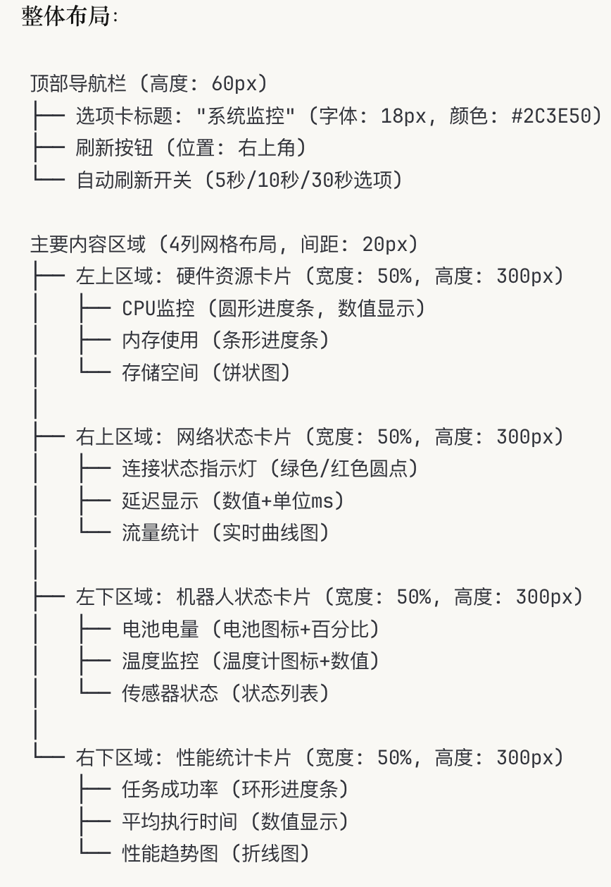
设计规范：
卡片背景: 白色 (#FFFFFF)
卡片圆角: 12px
阴影: 0 4px 8px rgba(0,0,0,0.1)
主色调: 蓝色 (#3498DB)
成功状态: 绿色 (#2ECC71)
警告状态: 黄色 (#F39C12)
错误状态: 红色 (#E74C3C)
功能概述：
集中管理系统各模块的参数配置，支持实时调整和配置文件管理。
核心功能模块：
机械臂参数配置
运动参数：速度、加速度、减速度设置
安全参数：碰撞检测阈值、关节限位
标定参数：DH参数、工具中心点(TCP)配置
力控参数：力传感器标定、柔顺控制参数
底盘参数配置
运动参数：最大速度、角速度、加减速度
导航参数：路径规划算法参数、避障距离
SLAM参数：建图精度、定位参数
安全参数：激光雷达安全区域设置
视觉系统配置
相机参数：曝光时间、增益、分辨率
标定参数：内参、外参、手眼标定矩阵
算法参数：检测阈值、跟踪参数
数据处理：滤波参数、图像处理设置
AI算法配置
模型参数：推理精度、批处理大小
检测参数：置信度阈值、NMS参数
规划参数：路径平滑、避障策略
学习参数：在线学习开关、数据收集设置
整体布局：
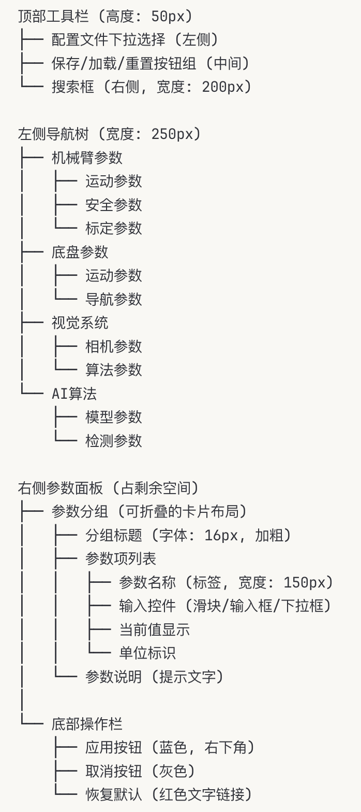
控件规范：
滑块: 蓝色滑块 + 数值显示
输入框: 边框圆角4px, 聚焦时蓝色边框
下拉框: 箭头图标, 悬停效果
按钮: 圆角6px, 悬停渐变效果
功能概述：
提供机器人运行数据的可视化分析，支持历史数据回放和趋势分析。
核心功能模块：
运行数据分析
轨迹分析：机械臂和底盘的运动轨迹可视化
任务统计：执行时间、成功率、失败原因分析
效率分析：工作负载、闲置时间统计
趋势分析：长期性能趋势和预测
传感器数据分析
视觉数据：检测结果统计、识别精度分析
位置数据：定位精度、漂移分析
力觉数据：接触力分析、碰撞统计
环境数据：温度、湿度等环境因素影响
故障诊断分析
故障统计：故障类型、频率分析
预警系统：基于历史数据的故障预测
维护建议：基于使用情况的维护提醒
性能退化：设备老化和性能下降分析
数据导出与报告
报告生成：自动生成运行报告
数据导出：CSV、Excel格式数据导出
图表导出：高质量图表输出
自定义分析：用户自定义数据分析规则
整体布局：
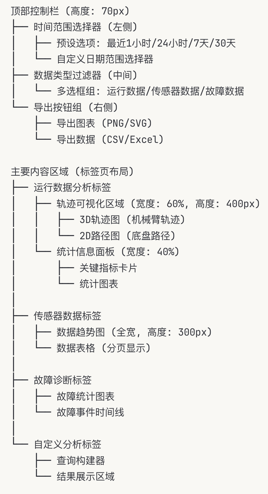
图表规范：
图表库: 使用现代化图表组件
颜色方案: 蓝色系渐变
交互效果: 悬停提示, 缩放, 选择
空状态: 友好的无数据提示
功能概述：
提供系统维护、诊断和升级管理功能，确保机器人系统的可靠运行。
核心功能模块：
诊断工具
硬件自检：自动检测各硬件模块状态
网络诊断：连接测试、带宽测试、延迟测试
功能测试：各子系统功能完整性测试
性能基准：系统性能基准测试
维护计划
预防性维护：基于时间和使用量的维护提醒
保养记录：维护历史记录和档案管理
备件管理：易损件库存和更换提醒
维护指导：图文并茂的维护操作指南
系统升级
固件升级：机械臂、底盘固件版本管理
软件更新：XC-OS系统和模块更新
配置备份：系统配置的备份和恢复
版本管理：软硬件版本记录和回滚
远程支持
远程诊断：支持技术人员远程诊断
日志上传：自动上传关键日志到服务端
在线支持：集成在线技术支持系统
知识库：常见问题和解决方案库
整体布局：
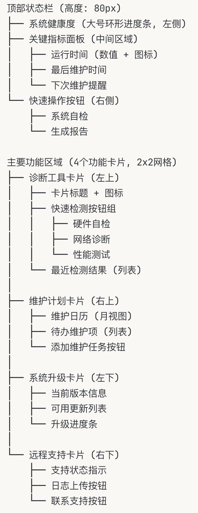
状态指示规范：
健康状态: 绿色圆形进度环
警告状态: 黄色三角图标
错误状态: 红色圆形图标
进行中状态: 蓝色旋转图标
功能概述：
提供可视化的任务编排和工作流设计，支持复杂任务的图形化编程。
核心功能模块：
可视化编程
拖拽式编程：图形化的任务编排界面
行为树编辑：可视化行为树设计和编辑
流程图设计：任务流程的图形化表示
模板库：预定义的任务模板和组件
任务管理
任务创建：新建自定义任务和工作流
任务调度：任务优先级和执行顺序管理
并发控制：多任务并行执行管理
条件逻辑：基于传感器数据的条件判断
动作库管理
基础动作：移动、抓取、放置等基本动作
复合动作：多个基础动作的组合
自定义动作：用户自定义的特殊动作
动作参数：动作执行参数的配置界面
执行控制
实时执行：任务的实时执行和监控
调试模式：单步执行和断点调试
错误处理：异常情况的处理策略
任务重试：失败任务的自动重试机制
整体布局：
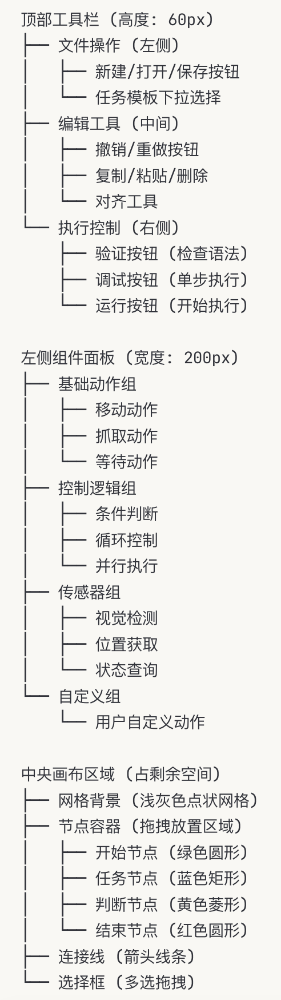
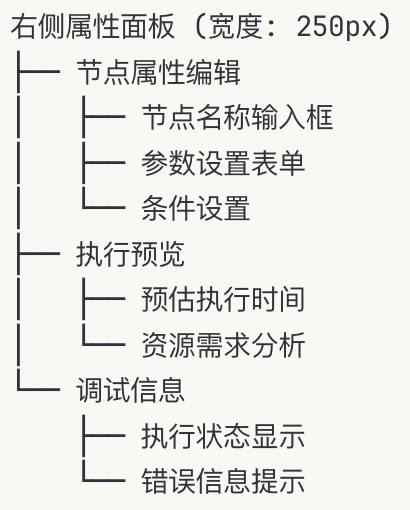
节点设计规范：
节点大小: 120px x 60px (矩形节点)
圆形节点: 直径 60px
连接点: 节点边缘的小圆点
选中状态: 蓝色边框 + 阴影
拖拽状态: 半透明效果
功能概述：
提供完整的机器人视觉解决方案，集成多ToF相机配置、点云处理、位姿估计、外部视觉数据接入和联合标定功能。
核心功能模块：
ToF相机配置：
胸部相机：环境感知，广角视野（640×480@30FPS）
左臂末端相机：精确定位，手眼协调
右臂末端相机：精确定位，手眼协调
相机参数设置：曝光时间、增益、深度范围、帧率控制
同步模式：硬件触发、软件触发、自由运行模式
2D相机集成：
头部主相机：1080P人脸识别和环境监控
双鱼眼相机：180°视角侧方补盲
USB接口管理和带宽优化
图像格式转换：RGB、BGR、YUV、GRAY
实时点云生成：
深度图转换：RGB-D配准，点云投影
多相机融合：点云合并、去重、配准
坐标系变换：相机系到机器人基座系
实时可视化：3D点云显示，颜色映射
点云滤波与处理：
统计离群值去除：邻域分析，异常点剔除
体素网格降采样：数据压缩，保持特征
通过滤波器：距离范围、ROI区域限制
平面分割：RANSAC平面检测，地面移除
高级点云算法：
物体分割：区域生长、聚类分析
特征提取：FPFH、SHOT、PFH描述符
配准算法：ICP、NDT、特征匹配
表面重建：泊松重建、Marching Cubes
6D位姿检测：
模板匹配：3D模型库管理
深度学习检测：YOLO 6D、PVNet集成
点云配准：特征匹配、几何验证
多视角融合：置信度加权，结果优化
位姿跟踪：
卡尔曼滤波：位姿平滑，预测估计
粒子滤波：非线性跟踪，遮挡处理
光流跟踪：2D特征点跟踪辅助
失跟恢复：重新检测，自动初始化
标准协议支持：
TCP/IP接口：JSON、XML数据格式
UDP广播：实时位姿数据流
ROS话题：geometry_msgs/PoseStamped
HTTP REST API：RESTful数据服务
数据格式转换：
坐标系转换：工具TCP、参考系变换
时间戳同步：多源数据时间对齐
精度校验：数据质量评估，异常检测
数据缓存：历史数据存储，回放分析
手眼标定：
经典AX=XB算法：Tsai-Lenz方法
眼在手（Eye-in-Hand）：末端相机标定
眼到手（Eye-to-Hand）：固定相机标定
自动标定：机器人运动规划，数据采集
多相机标定：
相机内参标定：张正友标定法，鱼眼模型
立体视觉标定：双目系统，视差计算
多相机外参：全局优化，束调整
ToF-RGB配准：深度相机与彩色相机对齐
标定质量评估：
重投影误差：像素级精度评估
3D点云误差：毫米级空间精度
标定板覆盖率：采样质量分析
实时标定助手：姿态引导，质量反馈
整体布局：
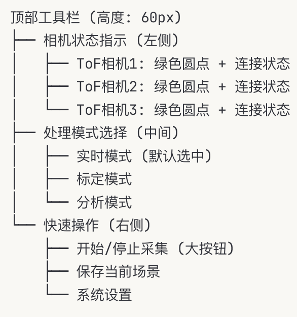
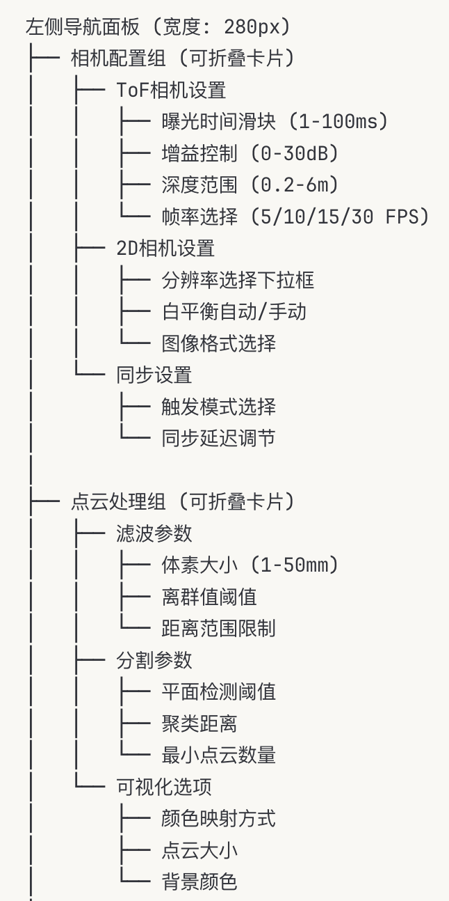
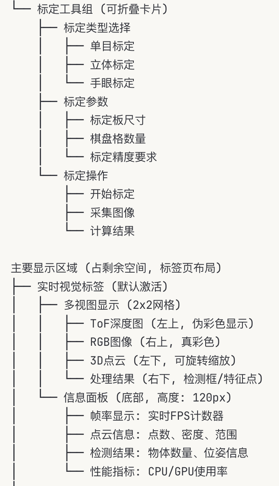
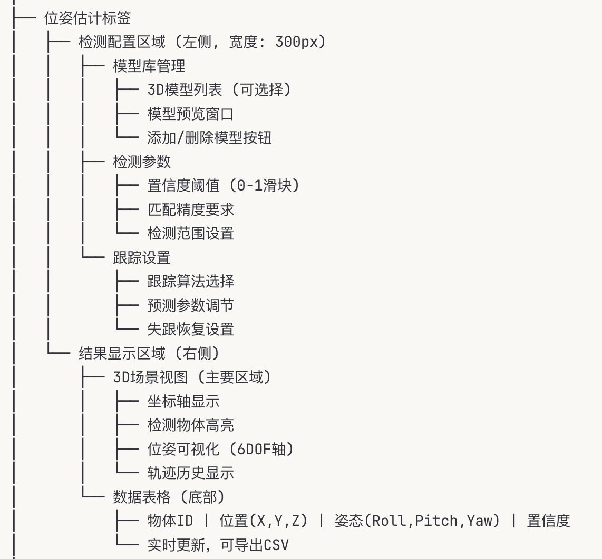
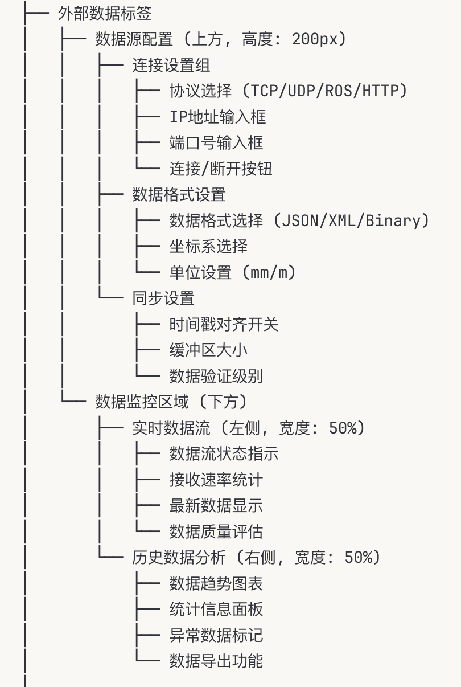
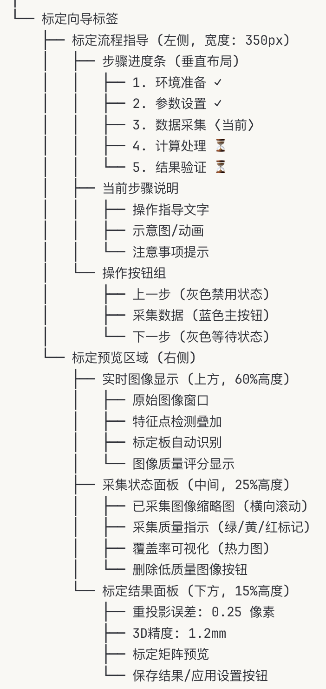
设计规范：
主色调: 深蓝色 (#2C3E50) + 科技蓝 (#3498DB)
状态颜色: 成功绿色 (#27AE60), 警告橙色 (#F39C12), 错误红色 (#E74C3C)
卡片阴影: 0 2px 8px rgba(0,0,0,0.1)
圆角设计: 8px
字体: 标题16px加粗, 正文14px, 说明文字12px
功能概述：
提供多模态人机交互功能，集成人脸识别、语音控制、梯控系统、任务分解和自然语言理解。
核心功能模块：
实时人脸检测：
MTCNN人脸检测：多任务级联网络
活体检测：防欺骗，真人验证
多人脸跟踪：ID分配，轨迹预测
年龄性别识别：属性分析，用户画像
人脸识别数据库：
用户注册：多角度采集，特征提取
人脸库管理：增删改查，批量导入
权限管理：访问控制，角色分配
识别日志：访问记录，行为分析
表情与情绪识别：
微表情检测：7种基本情绪识别
情绪状态分析：疲劳、专注度评估
交互适应：基于情绪调整响应策略
情绪数据统计：用户情绪历史分析
语音识别引擎：
多语言支持：中文、英文、方言识别
实时语音转文字：流式识别，低延迟
环境降噪：麦克风阵列，回声消除
唤醒词检测：自定义唤醒词，离线处理
自然语言理解：
意图识别：任务分类，参数提取
实体识别：地点、物体、动作识别
对话管理：多轮对话，上下文保持
语义解析：语法分析，语义表示
语音合成系统：
TTS引擎：自然语音合成，多音色选择
情感语音：语调控制，情绪表达
语速音调：个性化语音设置
多语言输出：语言切换，本地化支持
自然语言任务规划：
任务理解：复杂指令分解，子任务识别
行为树生成：自动构建执行逻辑
参数映射：语言描述到机器人动作
执行计划：时序安排，资源分配
可视化任务编辑：
任务流程图：图形化任务表示
参数调节：实时参数修改，效果预览
模板库：常用任务模板，快速部署
测试模式：安全测试，模拟执行
智能任务优化：
路径优化：最短路径，避障规划
动作优化：能耗最低，时间最短
学习改进：执行经验，性能提升
异常处理：错误恢复，重试机制
电梯识别与控制：
电梯检测：视觉识别电梯门，按钮面板
按钮识别：OCR数字识别，按钮定位
状态监控：电梯状态，楼层显示
自动呼梯：API接口，智能调度
多楼层导航：
楼层地图：多层地图管理，路径规划
位置定位：跨楼层定位，楼层识别
任务调度：多楼层任务优先级管理
电梯队列：排队管理，效率优化
安全保障系统：
碰撞检测：电梯内避障，人员检测
紧急停止：异常情况快速响应
超时保护：电梯超时自动退出
故障诊断：电梯故障检测，替代路径
手势识别系统：
静态手势：OK、停止、方向指示
动态手势：挥手、指点、圈选
手势训练：自定义手势，用户培训
置信度评估：手势准确性，误识别过滤
情境感知交互：
环境感知：人员位置，环境状态
交互距离：社交距离，安全距离
注意力检测：用户关注度，视线跟踪
主动交互：场景触发，智能问候
个性化适应：
用户偏好：交互习惯，个人设置
学习能力：行为模式，偏好学习
适应性调整：界面定制，响应优化
用户档案：历史记录，偏好分析
整体布局：
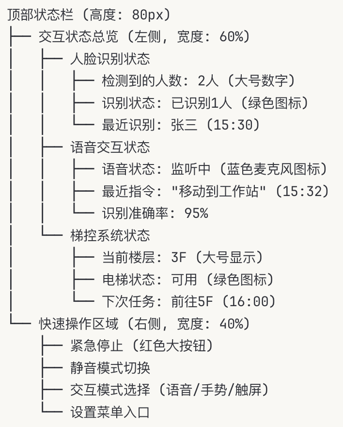
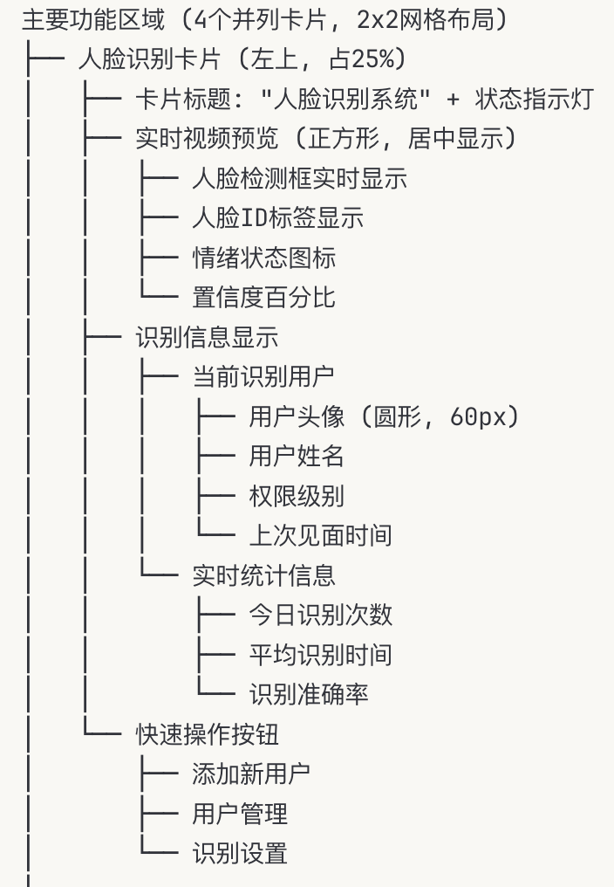
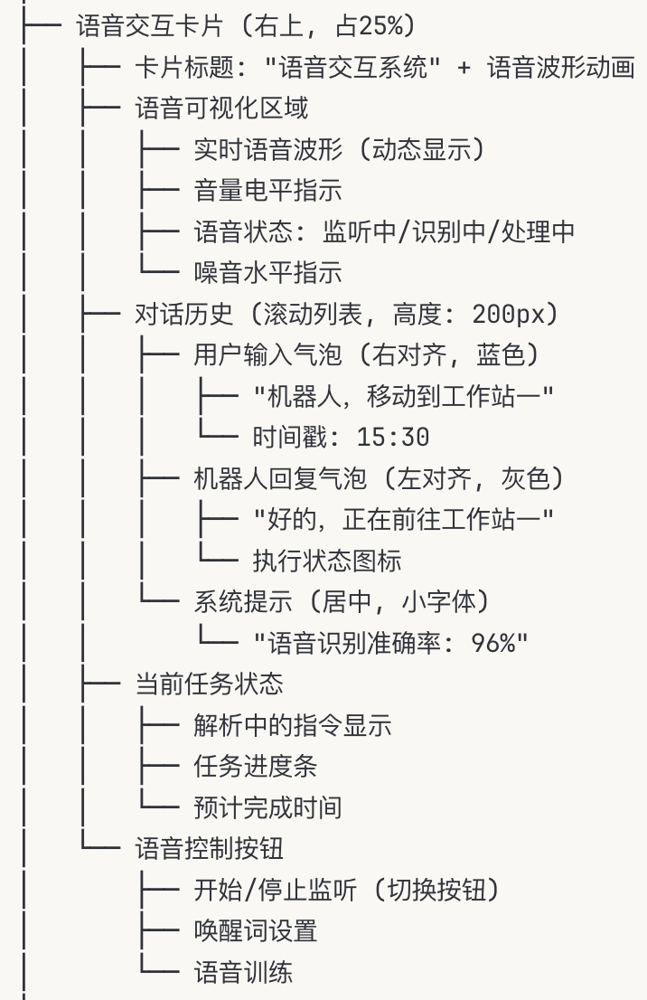
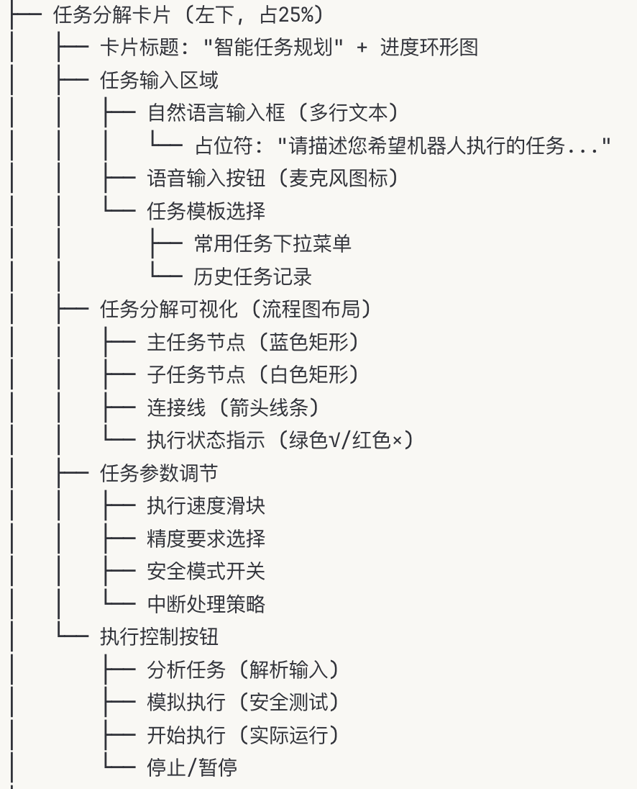
| 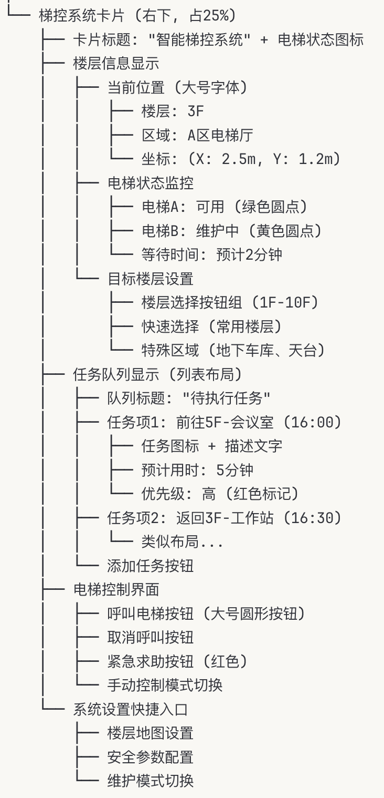 | 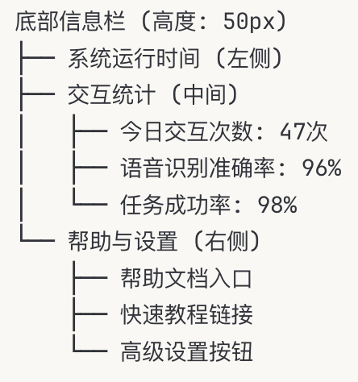 |
交互设计规范：
卡片设计: 圆角12px, 阴影 0 4px 12px rgba(0,0,0,0.15)
状态指示: 圆形指示灯(直径8px), 绿色运行/黄色警告/红色故障
按钮设计: 圆角6px, 悬停效果, 渐变色彩
语音可视化: 实时波形动画, 频谱分析显示
对话气泡: 圆角18px, 不同角色不同颜色和对齐方式
进度指示: 环形进度条, 百分比数字居中显示
楼层按钮: 正方形按钮(40x40px), 当前楼层高亮显示
响应式布局: 支持窗口缩放, 卡片自适应排列
可访问性设计：
高对比度模式支持
语音提示功能
大字体模式选项
键盘导航支持
颜色盲友好的图标设计
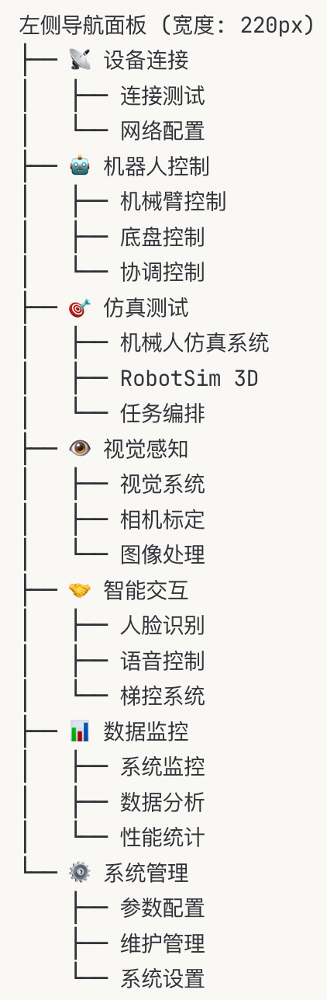
界面特点：
类似VS Code的Explorer面板
可折叠分组，节省空间
支持搜索功能
常用功能置顶